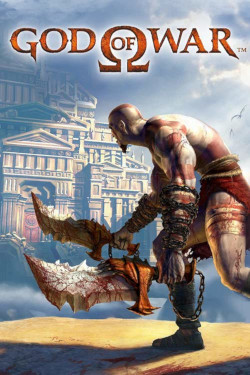
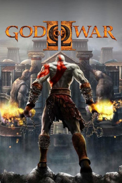

-fotor-bg-remover-20230609215716.png)
God of War 1 Box Art
God of War 2 Box Art
“God of War” is an action-adventure game created by Santa Monica Studios. In these exhilarating games, you follow Kratos, the once great spartan general turned revenge driven monster after being tricked by the Greek god of war, Ares, into slaying his wife and daughter. You follow Kratos on his journey, battling monsters of all sizes to reach his goal of getting his revenge on the cruel god, and taking the throne as the new god of war. There are a total of eight games in the series, most of which are games made exclusively for PlayStation consoles.
The franchise’s narrative took a turn as the once thriving formula of setting up a main protagonist and Kratos screaming their name every five minutes started to dwindle. People had been there and done that. Thus, the franchise was in dire need of a reboot if it were to stay afloat. Creative directors came up with the idea of giving Kratos a second chance at being a father. As a chance to escape his past, Kratos sets out and finds himself in Midgard, one of the nine realms in Norse mythology. It is here where he meets his new wife, Faye, and has a child named Atreus. The game released in 2018 simply titled “God of War” follows Kratos and Atreus as they fulfill Faye’s dying wish: to have her ashes spread on the highest peak of all the nine realms. Kratos teaches his son to be a strong and capable warrior and tries to hide his past from his son, but when the Nordic gods start giving the duo trouble, it becomes increasingly difficult to do so.